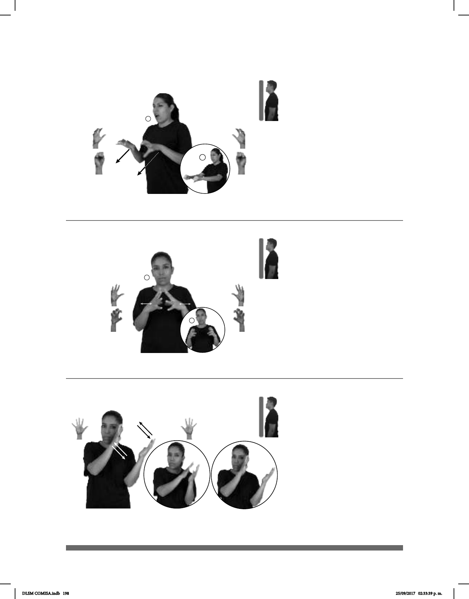

198
(5-G 16)
(5-G 17)
Seña: SS
Seña que pasa de 5.16 a S.1
Las palmas inician oblicuas
hacia abajo y hacia afuera y terminan hacia
abajo.
A la altura del pecho.
Recto hacia enfrente.
Ceño fruncido, acción
de masticar.
1. v. tr. Poder tocar algo o a
alguien a la distancia o altura a la que se
haber de algo en tal cantidad que baste para
alguien o que pueda repartirse.
Seña: SS
Seña que pasa de
5.2 a 5.9
Palmas hacia el centro.
A la altura del pecho.
Los dedos se retraen
repetidamente.
sust. m. Material
blancos, suaves y entrelazados, de
aspecto esponjoso, que se obtiene de la
semilla del algodonero.
tú-ALCANZAR-a-él pro-TÚ YA DEBER
Tú debes alcanzarlo.
_muy_
ESE SUAVE PARECE ALGODÓN
Eso es muy suave, parece algodón.
Seña: SS
5.1
Palmas hacia el centro.
A la altura de la cabeza
del lado derecho.
Las manos se acercan y
se alejan repetidamente.
sust. f. Funda rellena
de un material blando que sirve para
reclinar la cabeza.
(5-G 18)
____¡ !_
NUEVA ALMOHADA pro-YO YA COMPRAR SUERTE
Compré una almohada nueva, ¡qué suerte!
DLSM COMISA.indb 198 25/09/2017 02:33:39 p. m.